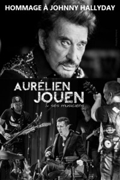

INFORMATIONS
Guitare et chant :
Aurélien Jouen
David Théron...
Durée :
2h30
|
AURELIEN JOUEN ET SES MUSICIENS
Fan de Johnny Hallyday depuis l’âge de 7 ans, Aurélien ne rate aucun de ses concerts. « Dès que je peux aller le voir sur scène ou à l’enregistrement d’une émission, je n’hésite pas une seconde ! Pour la dernière tournée, Rester vivant tour, je l’ai vu une fois à Bercy, à Paris, trois fois à Rouen et une fois à Tours », avoue Aurélien.Les raisons de cette passion pour « l’idole des jeunes » ? Une admiration sans bornes pour ses qualités vocales, mais aussi pour son charisme. « Je l’ai rencontré deux fois. La première, à l’occasion d’un concert privé dans les locaux de RTL, à Paris. La seconde, en décembre 2015, dans les loges du Zénith de Rouen. C’est une personne profondément gentille, avec un cœur énorme », affirme-t-il.Deux heures de spectacleDemain samedi, Aurélien proposera plus de deux heures de spectacle gratuit, à la salle des fêtes, 100 % live et 100 % Johnny. Il sera accompagné par les guitaristes Alexis Cauchois, son professeur de guitare, et David Théron ; un bassiste, Pierre Lemercier, et un batteur, Jean-Marc Durand, qui a déjà collaboré avec Michael Jones.« Je n’imite pas Johnny. Il est inégalable. J’interprète ses chansons avec ma touche personnelle. Le public entendra les chansons connues qu’il aime, comme Tennessee, Gabrielle, ou des plus récentes, comme De l’amour et Rester vivant. Mon objectif est de faire découvrir d’autres petites pépites moins célèbres comme J’ai pleuré sur ma guitare, une chanson américaine adaptée en français par Michel Mallory, en 1974 », confie Aurélien, qui souhaite partager sa passion avec tous les fans de Johnny.
|